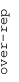
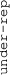

These results are also available as PDF and EPS documents.
Depending on your display resolution, scrolling or zooming may be necessary.
|  |
| 3 |
| 0 |
| -3 |
|  |
| GO_REGULATION_OF_MEIOTIC_CELL_CYCLE GO_REGULATION_OF_MEIOTIC_CELL_CYCLE | |||||||||||
| GO_HEPARIN_BINDING GO_HEPARIN_BINDING | |||||||||||
| GO_BIOMINERALIZATION GO_BIOMINERALIZATION | |||||||||||
| GO_HOMOPHILIC_CELL_ADHESION_VIA_PLASMA_MEMBRANE_ADHESION_MOLECULES GO_HOMOPHILIC_CELL_ADHESION_VIA_PLASMA_MEMBRANE_ADHESION_MOLECULES | |||||||||||
| GO_GLUTAMATE_RECEPTOR_SIGNALING_PATHWAY GO_GLUTAMATE_RECEPTOR_SIGNALING_PATHWAY | |||||||||||
| GO_VOLTAGE_GATED_ION_CHANNEL_ACTIVITY GO_VOLTAGE_GATED_ION_CHANNEL_ACTIVITY | |||||||||||
| GO_VOLTAGE_GATED_CATION_CHANNEL_ACTIVITY GO_VOLTAGE_GATED_CATION_CHANNEL_ACTIVITY | |||||||||||
| GO_EXTRACELLULAR_MATRIX_STRUCTURAL_CONSTITUENT GO_EXTRACELLULAR_MATRIX_STRUCTURAL_CONSTITUENT | |||||||||||
| GO_LIGAND_GATED_ION_CHANNEL_ACTIVITY GO_LIGAND_GATED_ION_CHANNEL_ACTIVITY | |||||||||||
| GO_DOPAMINE_TRANSPORT GO_DOPAMINE_TRANSPORT | |||||||||||
| GO_REGULATION_OF_DOPAMINE_SECRETION GO_REGULATION_OF_DOPAMINE_SECRETION | |||||||||||
| GO_DRUG_TRANSPORT GO_DRUG_TRANSPORT | |||||||||||
| GO_SODIUM_ION_TRANSMEMBRANE_TRANSPORTER_ACTIVITY GO_SODIUM_ION_TRANSMEMBRANE_TRANSPORTER_ACTIVITY | |||||||||||
| GO_SYNAPTIC_TRANSMISSION_GLUTAMATERGIC GO_SYNAPTIC_TRANSMISSION_GLUTAMATERGIC | |||||||||||
| GO_MOTILE_CILIUM GO_MOTILE_CILIUM | |||||||||||
| GO_AMMONIUM_TRANSPORT GO_AMMONIUM_TRANSPORT | |||||||||||
| GO_AMINE_TRANSPORT GO_AMINE_TRANSPORT | |||||||||||
| GO_PLASMA_MEMBRANE_SIGNALING_RECEPTOR_COMPLEX GO_PLASMA_MEMBRANE_SIGNALING_RECEPTOR_COMPLEX | |||||||||||
| GO_INTEGRIN_BINDING GO_INTEGRIN_BINDING | |||||||||||
| GO_INTRINSIC_COMPONENT_OF_PRESYNAPTIC_MEMBRANE GO_INTRINSIC_COMPONENT_OF_PRESYNAPTIC_MEMBRANE | |||||||||||
| GO_INTRINSIC_COMPONENT_OF_SYNAPTIC_MEMBRANE GO_INTRINSIC_COMPONENT_OF_SYNAPTIC_MEMBRANE | |||||||||||
| GO_LIGAND_GATED_CATION_CHANNEL_ACTIVITY GO_LIGAND_GATED_CATION_CHANNEL_ACTIVITY | |||||||||||
| GO_INNER_DYNEIN_ARM_ASSEMBLY GO_INNER_DYNEIN_ARM_ASSEMBLY | |||||||||||
| GO_GROWTH_FACTOR_ACTIVITY GO_GROWTH_FACTOR_ACTIVITY | |||||||||||
| GO_SPROUTING_ANGIOGENESIS GO_SPROUTING_ANGIOGENESIS | |||||||||||
| GO_COMPLEMENT_ACTIVATION GO_COMPLEMENT_ACTIVATION | |||||||||||
| GO_HETEROPHILIC_CELL_CELL_ADHESION_VIA_PLASMA_MEMBRANE_CELL_ADHESION_MOLECULES GO_HETEROPHILIC_CELL_CELL_ADHESION_VIA_PLASMA_MEMBRANE_CELL_ADHESION_MOLECULES | |||||||||||
| GO_BLOOD_MICROPARTICLE GO_BLOOD_MICROPARTICLE | |||||||||||
| GO_CONNEXIN_COMPLEX GO_CONNEXIN_COMPLEX | |||||||||||
| GO_CHLORIDE_TRANSPORT GO_CHLORIDE_TRANSPORT | |||||||||||
| GO_CHLORIDE_TRANSMEMBRANE_TRANSPORTER_ACTIVITY GO_CHLORIDE_TRANSMEMBRANE_TRANSPORTER_ACTIVITY | |||||||||||
| GO_INORGANIC_ANION_TRANSMEMBRANE_TRANSPORT GO_INORGANIC_ANION_TRANSMEMBRANE_TRANSPORT | |||||||||||
| GO_REGULATION_OF_HUMORAL_IMMUNE_RESPONSE GO_REGULATION_OF_HUMORAL_IMMUNE_RESPONSE | |||||||||||
| GO_INORGANIC_ANION_TRANSMEMBRANE_TRANSPORTER_ACTIVITY GO_INORGANIC_ANION_TRANSMEMBRANE_TRANSPORTER_ACTIVITY | |||||||||||
| GO_BONE_MINERALIZATION GO_BONE_MINERALIZATION | |||||||||||
| GO_FEVER_GENERATION GO_FEVER_GENERATION | |||||||||||
| GO_MULTICELLULAR_ORGANISMAL_SIGNALING GO_MULTICELLULAR_ORGANISMAL_SIGNALING | |||||||||||
| GO_CARDIAC_CONDUCTION GO_CARDIAC_CONDUCTION | |||||||||||
| GO_FOREBRAIN_NEURON_DIFFERENTIATION GO_FOREBRAIN_NEURON_DIFFERENTIATION | |||||||||||
| GO_I_BAND GO_I_BAND | |||||||||||
| GO_MAIN_AXON GO_MAIN_AXON | |||||||||||
| GO_SODIUM_ION_TRANSMEMBRANE_TRANSPORT GO_SODIUM_ION_TRANSMEMBRANE_TRANSPORT | |||||||||||
| GO_NEGATIVE_CHEMOTAXIS GO_NEGATIVE_CHEMOTAXIS | |||||||||||
| GO_NEGATIVE_REGULATION_OF_CELL_PROJECTION_ORGANIZATION GO_NEGATIVE_REGULATION_OF_CELL_PROJECTION_ORGANIZATION | |||||||||||
| GO_NEGATIVE_REGULATION_OF_NEURON_PROJECTION_DEVELOPMENT GO_NEGATIVE_REGULATION_OF_NEURON_PROJECTION_DEVELOPMENT | |||||||||||
| GO_NEGATIVE_REGULATION_OF_CELL_MORPHOGENESIS_INVOLVED_IN_DIFFERENTIATION GO_NEGATIVE_REGULATION_OF_CELL_MORPHOGENESIS_INVOLVED_IN_DIFFERENTIATION | |||||||||||
| GO_NEGATIVE_REGULATION_OF_AXONOGENESIS GO_NEGATIVE_REGULATION_OF_AXONOGENESIS | |||||||||||
| GO_REGULATION_OF_ACUTE_INFLAMMATORY_RESPONSE GO_REGULATION_OF_ACUTE_INFLAMMATORY_RESPONSE | |||||||||||
| GO_POSITIVE_REGULATION_OF_ACUTE_INFLAMMATORY_RESPONSE GO_POSITIVE_REGULATION_OF_ACUTE_INFLAMMATORY_RESPONSE | |||||||||||
| GO_OXIDOREDUCTASE_ACTIVITY_ACTING_ON_THE_CH_NH2_GROUP_OF_DONORS_OXYGEN_AS_ACCEPTOR GO_OXIDOREDUCTASE_ACTIVITY_ACTING_ON_THE_CH_NH2_GROUP_OF_DONORS_OXYGEN_AS_ACCEPTOR | |||||||||||
| GO_POSITIVE_REGULATION_OF_PROTEIN_TYROSINE_KINASE_ACTIVITY GO_POSITIVE_REGULATION_OF_PROTEIN_TYROSINE_KINASE_ACTIVITY | |||||||||||
| GO_CARDIAC_MUSCLE_TISSUE_MORPHOGENESIS GO_CARDIAC_MUSCLE_TISSUE_MORPHOGENESIS | |||||||||||
| GO_RESPONSE_TO_AMYLOID_BETA GO_RESPONSE_TO_AMYLOID_BETA | |||||||||||
| GO_CELLULAR_RESPONSE_TO_AMYLOID_BETA GO_CELLULAR_RESPONSE_TO_AMYLOID_BETA | |||||||||||
| GO_AXOLEMMA GO_AXOLEMMA | |||||||||||
| GO_SITE_OF_POLARIZED_GROWTH GO_SITE_OF_POLARIZED_GROWTH | |||||||||||
| GO_BICARBONATE_TRANSPORT GO_BICARBONATE_TRANSPORT | |||||||||||
| GO_CALCIUM_ION_TRANSMEMBRANE_TRANSPORTER_ACTIVITY GO_CALCIUM_ION_TRANSMEMBRANE_TRANSPORTER_ACTIVITY | |||||||||||
| GO_TRANSMEMBRANE_RECEPTOR_PROTEIN_KINASE_ACTIVITY GO_TRANSMEMBRANE_RECEPTOR_PROTEIN_KINASE_ACTIVITY | |||||||||||
| GO_POSITIVE_REGULATION_OF_PEPTIDYL_TYROSINE_PHOSPHORYLATION GO_POSITIVE_REGULATION_OF_PEPTIDYL_TYROSINE_PHOSPHORYLATION | |||||||||||
| GO_RESPONSE_TO_CALCIUM_ION GO_RESPONSE_TO_CALCIUM_ION | |||||||||||
| GO_PROTEIN_TYROSINE_KINASE_ACTIVITY GO_PROTEIN_TYROSINE_KINASE_ACTIVITY | |||||||||||
| GO_CELL_MATURATION GO_CELL_MATURATION | |||||||||||
| GO_POSITIVE_REGULATION_OF_VASCULAR_ENDOTHELIAL_GROWTH_FACTOR_PRODUCTION GO_POSITIVE_REGULATION_OF_VASCULAR_ENDOTHELIAL_GROWTH_FACTOR_PRODUCTION | |||||||||||
| GO_LEADING_EDGE_MEMBRANE GO_LEADING_EDGE_MEMBRANE | |||||||||||
| GO_AXON_EXTENSION GO_AXON_EXTENSION | |||||||||||
| GO_MUSCLE_CELL_APOPTOTIC_PROCESS GO_MUSCLE_CELL_APOPTOTIC_PROCESS | |||||||||||
| GO_EXCITATORY_SYNAPSE GO_EXCITATORY_SYNAPSE | |||||||||||
| GO_NEGATIVE_REGULATION_OF_RESPONSE_TO_WOUNDING GO_NEGATIVE_REGULATION_OF_RESPONSE_TO_WOUNDING | |||||||||||
| GO_NEGATIVE_REGULATION_OF_WOUND_HEALING GO_NEGATIVE_REGULATION_OF_WOUND_HEALING | |||||||||||
| GO_REGULATION_OF_POSTSYNAPTIC_MEMBRANE_POTENTIAL GO_REGULATION_OF_POSTSYNAPTIC_MEMBRANE_POTENTIAL | |||||||||||
| GO_REGULATION_OF_RESPONSE_TO_WOUNDING GO_REGULATION_OF_RESPONSE_TO_WOUNDING | |||||||||||
| GO_REGULATION_OF_WOUND_HEALING GO_REGULATION_OF_WOUND_HEALING | |||||||||||
| GO_NEGATIVE_REGULATION_OF_COAGULATION GO_NEGATIVE_REGULATION_OF_COAGULATION | |||||||||||
| GO_VASCULAR_PROCESS_IN_CIRCULATORY_SYSTEM GO_VASCULAR_PROCESS_IN_CIRCULATORY_SYSTEM | |||||||||||
| GO_REGULATION_OF_TUBE_SIZE GO_REGULATION_OF_TUBE_SIZE | |||||||||||
| GO_SYMPORTER_ACTIVITY GO_SYMPORTER_ACTIVITY | |||||||||||
| GO_ANION_CHANNEL_ACTIVITY GO_ANION_CHANNEL_ACTIVITY | |||||||||||
| GO_ADHERENS_JUNCTION GO_ADHERENS_JUNCTION | |||||||||||
| GO_BONE_MORPHOGENESIS GO_BONE_MORPHOGENESIS | |||||||||||
| GO_ENDOCHONDRAL_BONE_MORPHOGENESIS GO_ENDOCHONDRAL_BONE_MORPHOGENESIS | |||||||||||
| GO_REGULATION_OF_BEHAVIOR GO_REGULATION_OF_BEHAVIOR | |||||||||||
| GO_MONOCARBOXYLIC_ACID_TRANSPORT GO_MONOCARBOXYLIC_ACID_TRANSPORT | |||||||||||
| GO_NEPHRON_DEVELOPMENT GO_NEPHRON_DEVELOPMENT | |||||||||||
| GO_REGULATION_OF_MACROPHAGE_MIGRATION GO_REGULATION_OF_MACROPHAGE_MIGRATION | |||||||||||
| GO_HEAT_GENERATION GO_HEAT_GENERATION | |||||||||||
| GO_CHONDROCYTE_DEVELOPMENT_INVOLVED_IN_ENDOCHONDRAL_BONE_MORPHOGENESIS GO_CHONDROCYTE_DEVELOPMENT_INVOLVED_IN_ENDOCHONDRAL_BONE_MORPHOGENESIS | |||||||||||
| GO_CHROMOSOME_CENTROMERIC_REGION GO_CHROMOSOME_CENTROMERIC_REGION | |||||||||||
| GO_KINETOCHORE GO_KINETOCHORE | |||||||||||
| GO_CONDENSED_CHROMOSOME_CENTROMERIC_REGION GO_CONDENSED_CHROMOSOME_CENTROMERIC_REGION | |||||||||||
| GO_ANAPHASE_PROMOTING_COMPLEX_DEPENDENT_CATABOLIC_PROCESS GO_ANAPHASE_PROMOTING_COMPLEX_DEPENDENT_CATABOLIC_PROCESS | |||||||||||
| GO_SPINDLE_POLE GO_SPINDLE_POLE | |||||||||||
| GO_REGULATION_OF_GENERATION_OF_PRECURSOR_METABOLITES_AND_ENERGY GO_REGULATION_OF_GENERATION_OF_PRECURSOR_METABOLITES_AND_ENERGY | |||||||||||
| GO_SPINDLE_MICROTUBULE GO_SPINDLE_MICROTUBULE | |||||||||||
| GO_REGULATION_OF_ATP_METABOLIC_PROCESS GO_REGULATION_OF_ATP_METABOLIC_PROCESS | |||||||||||
| GO_INTERLEUKIN_1_MEDIATED_SIGNALING_PATHWAY GO_INTERLEUKIN_1_MEDIATED_SIGNALING_PATHWAY | |||||||||||
| GO_MICROTUBULE_CYTOSKELETON_ORGANIZATION_INVOLVED_IN_MITOSIS GO_MICROTUBULE_CYTOSKELETON_ORGANIZATION_INVOLVED_IN_MITOSIS | |||||||||||
| GO_REGULATION_OF_GENE_SILENCING GO_REGULATION_OF_GENE_SILENCING | |||||||||||
| GO_MITOTIC_SPINDLE_ORGANIZATION GO_MITOTIC_SPINDLE_ORGANIZATION | |||||||||||
| GO_REGULATION_OF_NUCLEAR_DIVISION GO_REGULATION_OF_NUCLEAR_DIVISION | |||||||||||
| GO_IMPORT_INTO_NUCLEUS GO_IMPORT_INTO_NUCLEUS | |||||||||||
| GO_PROTEIN_IMPORT GO_PROTEIN_IMPORT | |||||||||||
| GO_REGULATION_OF_CARBOHYDRATE_CATABOLIC_PROCESS GO_REGULATION_OF_CARBOHYDRATE_CATABOLIC_PROCESS | |||||||||||
| GO_METAL_CLUSTER_BINDING GO_METAL_CLUSTER_BINDING | |||||||||||
| GO_NUCLEAR_UBIQUITIN_LIGASE_COMPLEX GO_NUCLEAR_UBIQUITIN_LIGASE_COMPLEX | |||||||||||
| GO_CHROMOSOME_LOCALIZATION GO_CHROMOSOME_LOCALIZATION | |||||||||||
| GO_TRANSCRIPTION_INITIATION_FROM_RNA_POLYMERASE_II_PROMOTER GO_TRANSCRIPTION_INITIATION_FROM_RNA_POLYMERASE_II_PROMOTER | |||||||||||
| GO_ENDOPLASMIC_RETICULUM_UNFOLDED_PROTEIN_RESPONSE GO_ENDOPLASMIC_RETICULUM_UNFOLDED_PROTEIN_RESPONSE | |||||||||||
| GO_RESPONSE_TO_TOPOLOGICALLY_INCORRECT_PROTEIN GO_RESPONSE_TO_TOPOLOGICALLY_INCORRECT_PROTEIN | |||||||||||
| GO_CELLULAR_RESPONSE_TO_TOPOLOGICALLY_INCORRECT_PROTEIN GO_CELLULAR_RESPONSE_TO_TOPOLOGICALLY_INCORRECT_PROTEIN | |||||||||||
| GO_HSP90_PROTEIN_BINDING GO_HSP90_PROTEIN_BINDING | |||||||||||
| GO_POSITIVE_REGULATION_OF_I_KAPPAB_KINASE_NF_KAPPAB_SIGNALING GO_POSITIVE_REGULATION_OF_I_KAPPAB_KINASE_NF_KAPPAB_SIGNALING | |||||||||||
| GO_MEIOTIC_CELL_CYCLE_PROCESS GO_MEIOTIC_CELL_CYCLE_PROCESS | |||||||||||
| GO_HOMOTYPIC_CELL_CELL_ADHESION GO_HOMOTYPIC_CELL_CELL_ADHESION | |||||||||||
| GO_ADHESION_OF_SYMBIONT_TO_HOST GO_ADHESION_OF_SYMBIONT_TO_HOST | |||||||||||
| GO_ADHESION_OF_SYMBIONT_TO_HOST_CELL GO_ADHESION_OF_SYMBIONT_TO_HOST_CELL | |||||||||||
| GO_MITOTIC_DNA_INTEGRITY_CHECKPOINT GO_MITOTIC_DNA_INTEGRITY_CHECKPOINT | |||||||||||
| GO_G1_DNA_DAMAGE_CHECKPOINT GO_G1_DNA_DAMAGE_CHECKPOINT | |||||||||||
| GO_MITOTIC_CELL_CYCLE_CHECKPOINT GO_MITOTIC_CELL_CYCLE_CHECKPOINT | |||||||||||
| GO_ATPASE_COMPLEX GO_ATPASE_COMPLEX | |||||||||||
| GO_RNA_METHYLTRANSFERASE_ACTIVITY GO_RNA_METHYLTRANSFERASE_ACTIVITY | |||||||||||
| GO_REGULATION_OF_TRANSLATIONAL_INITIATION GO_REGULATION_OF_TRANSLATIONAL_INITIATION | |||||||||||
| GO_ELECTRON_TRANSPORT_CHAIN GO_ELECTRON_TRANSPORT_CHAIN | |||||||||||
| GO_AZUROPHIL_GRANULE GO_AZUROPHIL_GRANULE | |||||||||||
| GO_AZUROPHIL_GRANULE_MEMBRANE GO_AZUROPHIL_GRANULE_MEMBRANE | |||||||||||
| GO_HETEROCHROMATIN GO_HETEROCHROMATIN | |||||||||||
| GO_REGULATION_OF_CELL_CYCLE_ARREST GO_REGULATION_OF_CELL_CYCLE_ARREST | |||||||||||
| GO_REGULATION_OF_POSTTRANSCRIPTIONAL_GENE_SILENCING GO_REGULATION_OF_POSTTRANSCRIPTIONAL_GENE_SILENCING | |||||||||||
| GO_NON_RECOMBINATIONAL_REPAIR GO_NON_RECOMBINATIONAL_REPAIR | |||||||||||
| GO_CYTOSKELETON_DEPENDENT_INTRACELLULAR_TRANSPORT GO_CYTOSKELETON_DEPENDENT_INTRACELLULAR_TRANSPORT | |||||||||||
| GO_INTRACILIARY_TRANSPORT_INVOLVED_IN_CILIUM_ASSEMBLY GO_INTRACILIARY_TRANSPORT_INVOLVED_IN_CILIUM_ASSEMBLY | |||||||||||
| GO_MICROTUBULE_BASED_TRANSPORT GO_MICROTUBULE_BASED_TRANSPORT | |||||||||||
| GO_S_ADENOSYLMETHIONINE_DEPENDENT_METHYLTRANSFERASE_ACTIVITY GO_S_ADENOSYLMETHIONINE_DEPENDENT_METHYLTRANSFERASE_ACTIVITY | |||||||||||
| GO_ORGANELLE_DISASSEMBLY GO_ORGANELLE_DISASSEMBLY | |||||||||||
| GO_OXIDATIVE_PHOSPHORYLATION GO_OXIDATIVE_PHOSPHORYLATION | |||||||||||
| GO_ATP_SYNTHESIS_COUPLED_ELECTRON_TRANSPORT GO_ATP_SYNTHESIS_COUPLED_ELECTRON_TRANSPORT | |||||||||||
| GO_RESPIRATORY_ELECTRON_TRANSPORT_CHAIN GO_RESPIRATORY_ELECTRON_TRANSPORT_CHAIN | |||||||||||
| GO_OXIDOREDUCTASE_COMPLEX GO_OXIDOREDUCTASE_COMPLEX | |||||||||||
| GO_MITOCHONDRIAL_ELECTRON_TRANSPORT_NADH_TO_UBIQUINONE GO_MITOCHONDRIAL_ELECTRON_TRANSPORT_NADH_TO_UBIQUINONE | |||||||||||
| GO_U2_TYPE_SPLICEOSOMAL_COMPLEX GO_U2_TYPE_SPLICEOSOMAL_COMPLEX | |||||||||||
| GO_CHROMATIN_REMODELING GO_CHROMATIN_REMODELING | |||||||||||
| GO_NADH_DEHYDROGENASE_COMPLEX_ASSEMBLY GO_NADH_DEHYDROGENASE_COMPLEX_ASSEMBLY | |||||||||||
| GO_FICOLIN_1_RICH_GRANULE GO_FICOLIN_1_RICH_GRANULE | |||||||||||
| GO_HISTONE_UBIQUITINATION GO_HISTONE_UBIQUITINATION | |||||||||||
| GO_HISTONE_MONOUBIQUITINATION GO_HISTONE_MONOUBIQUITINATION | |||||||||||
| GO_RRNA_BINDING GO_RRNA_BINDING | |||||||||||
| GO_INNER_MITOCHONDRIAL_MEMBRANE_ORGANIZATION GO_INNER_MITOCHONDRIAL_MEMBRANE_ORGANIZATION | |||||||||||
| GO_DNA_TEMPLATED_TRANSCRIPTION_ELONGATION GO_DNA_TEMPLATED_TRANSCRIPTION_ELONGATION | |||||||||||
| GO_TRANSCRIPTION_ELONGATION_FROM_RNA_POLYMERASE_II_PROMOTER GO_TRANSCRIPTION_ELONGATION_FROM_RNA_POLYMERASE_II_PROMOTER | |||||||||||
| GO_REPLISOME GO_REPLISOME | |||||||||||
| GO_DNA_REPLICATION_FACTOR_A_COMPLEX GO_DNA_REPLICATION_FACTOR_A_COMPLEX | |||||||||||
| GO_U1_SNRNP GO_U1_SNRNP | |||||||||||
| GO_PRESPLICEOSOME GO_PRESPLICEOSOME | |||||||||||
| GO_PROTEIN_TARGETING_TO_MITOCHONDRION GO_PROTEIN_TARGETING_TO_MITOCHONDRION | |||||||||||
| GO_PROTEIN_LOCALIZATION_TO_MITOCHONDRION GO_PROTEIN_LOCALIZATION_TO_MITOCHONDRION | |||||||||||
| GO_NUCLEOSOME_BINDING GO_NUCLEOSOME_BINDING | |||||||||||
| GO_U2_TYPE_CATALYTIC_STEP_2_SPLICEOSOME GO_U2_TYPE_CATALYTIC_STEP_2_SPLICEOSOME | |||||||||||
| GO_U12_TYPE_SPLICEOSOMAL_COMPLEX GO_U12_TYPE_SPLICEOSOMAL_COMPLEX | |||||||||||
| GO_U2_SNRNP GO_U2_SNRNP | |||||||||||
| GO_METHYLTRANSFERASE_COMPLEX GO_METHYLTRANSFERASE_COMPLEX | |||||||||||
| GO_PEPTIDASE_COMPLEX GO_PEPTIDASE_COMPLEX | |||||||||||
| GO_ENDOPEPTIDASE_COMPLEX GO_ENDOPEPTIDASE_COMPLEX | |||||||||||
| GO_ANTIGEN_PROCESSING_AND_PRESENTATION_OF_PEPTIDE_OR_POLYSACCHARIDE_ANTIGEN_VIA_MHC_CLASS_II GO_ANTIGEN_PROCESSING_AND_PRESENTATION_OF_PEPTIDE_OR_POLYSACCHARIDE_ANTIGEN_VIA_MHC_CLASS_II | |||||||||||
| GO_ANTIGEN_PROCESSING_AND_PRESENTATION_OF_PEPTIDE_ANTIGEN GO_ANTIGEN_PROCESSING_AND_PRESENTATION_OF_PEPTIDE_ANTIGEN | |||||||||||
| GO_ANTIGEN_PROCESSING_AND_PRESENTATION_OF_PEPTIDE_ANTIGEN_VIA_MHC_CLASS_I GO_ANTIGEN_PROCESSING_AND_PRESENTATION_OF_PEPTIDE_ANTIGEN_VIA_MHC_CLASS_I | |||||||||||
| GO_ANTIGEN_PROCESSING_AND_PRESENTATION_OF_EXOGENOUS_PEPTIDE_ANTIGEN_VIA_MHC_CLASS_I GO_ANTIGEN_PROCESSING_AND_PRESENTATION_OF_EXOGENOUS_PEPTIDE_ANTIGEN_VIA_MHC_CLASS_I | |||||||||||
| GO_NEGATIVE_REGULATION_OF_RESPONSE_TO_ENDOPLASMIC_RETICULUM_STRESS GO_NEGATIVE_REGULATION_OF_RESPONSE_TO_ENDOPLASMIC_RETICULUM_STRESS | |||||||||||
| GO_SISTER_CHROMATID_SEGREGATION GO_SISTER_CHROMATID_SEGREGATION | |||||||||||
| GO_MITOTIC_SISTER_CHROMATID_SEGREGATION GO_MITOTIC_SISTER_CHROMATID_SEGREGATION | |||||||||||
| GO_CYCLIN_DEPENDENT_PROTEIN_KINASE_HOLOENZYME_COMPLEX GO_CYCLIN_DEPENDENT_PROTEIN_KINASE_HOLOENZYME_COMPLEX | |||||||||||
| GO_CHROMOSOME_SEPARATION GO_CHROMOSOME_SEPARATION | |||||||||||
| GO_FIBRILLAR_CENTER GO_FIBRILLAR_CENTER | |||||||||||
| GO_IRE1_MEDIATED_UNFOLDED_PROTEIN_RESPONSE GO_IRE1_MEDIATED_UNFOLDED_PROTEIN_RESPONSE | |||||||||||
| GO_RNA_POLYMERASE_COMPLEX GO_RNA_POLYMERASE_COMPLEX | |||||||||||
| GO_RNA_POLYMERASE_II_HOLOENZYME GO_RNA_POLYMERASE_II_HOLOENZYME | |||||||||||
| GO_ATP_DEPENDENT_CHROMATIN_REMODELING GO_ATP_DEPENDENT_CHROMATIN_REMODELING | |||||||||||
| GO_REGULATION_OF_CHROMOSOME_SEGREGATION GO_REGULATION_OF_CHROMOSOME_SEGREGATION | |||||||||||
| GO_REGULATION_OF_SISTER_CHROMATID_SEGREGATION GO_REGULATION_OF_SISTER_CHROMATID_SEGREGATION | |||||||||||
| GO_MITOCHONDRIAL_MEMBRANE_ORGANIZATION GO_MITOCHONDRIAL_MEMBRANE_ORGANIZATION | |||||||||||
| GO_FC_RECEPTOR_SIGNALING_PATHWAY GO_FC_RECEPTOR_SIGNALING_PATHWAY | |||||||||||
| GO_MIDBODY GO_MIDBODY | |||||||||||
| GO_CHROMATIN_ASSEMBLY_OR_DISASSEMBLY GO_CHROMATIN_ASSEMBLY_OR_DISASSEMBLY | |||||||||||
| GO_POSITIVE_REGULATION_OF_CHROMOSOME_ORGANIZATION GO_POSITIVE_REGULATION_OF_CHROMOSOME_ORGANIZATION | |||||||||||
| GO_CHROMATIN_ASSEMBLY GO_CHROMATIN_ASSEMBLY | |||||||||||
| GO_NUCLEOSOME_ORGANIZATION GO_NUCLEOSOME_ORGANIZATION | |||||||||||
| GO_PROTEIN_DNA_COMPLEX GO_PROTEIN_DNA_COMPLEX | |||||||||||
| GO_NEGATIVE_REGULATION_OF_GENE_EXPRESSION_EPIGENETIC GO_NEGATIVE_REGULATION_OF_GENE_EXPRESSION_EPIGENETIC | |||||||||||
| GO_CHROMATIN_ORGANIZATION_INVOLVED_IN_REGULATION_OF_TRANSCRIPTION GO_CHROMATIN_ORGANIZATION_INVOLVED_IN_REGULATION_OF_TRANSCRIPTION | |||||||||||
| GO_DNA_PACKAGING_COMPLEX GO_DNA_PACKAGING_COMPLEX | |||||||||||
| GO_NCRNA_TRANSCRIPTION GO_NCRNA_TRANSCRIPTION | |||||||||||
| GO_SNRNA_TRANSCRIPTION GO_SNRNA_TRANSCRIPTION | |||||||||||
| GO_UBIQUITIN_DEPENDENT_ERAD_PATHWAY GO_UBIQUITIN_DEPENDENT_ERAD_PATHWAY | |||||||||||
| GO_ERAD_PATHWAY GO_ERAD_PATHWAY | |||||||||||
| GO_GDP_BINDING GO_GDP_BINDING | |||||||||||
| GO_PROTEIN_C_TERMINUS_BINDING GO_PROTEIN_C_TERMINUS_BINDING | |||||||||||
| GO_RAB_PROTEIN_SIGNAL_TRANSDUCTION GO_RAB_PROTEIN_SIGNAL_TRANSDUCTION | |||||||||||
| GO_ORGANELLE_FUSION GO_ORGANELLE_FUSION | |||||||||||
| GO_RETROGRADE_VESICLE_MEDIATED_TRANSPORT_GOLGI_TO_ENDOPLASMIC_RETICULUM GO_RETROGRADE_VESICLE_MEDIATED_TRANSPORT_GOLGI_TO_ENDOPLASMIC_RETICULUM | |||||||||||
| GO_CILIARY_BASAL_BODY_PLASMA_MEMBRANE_DOCKING GO_CILIARY_BASAL_BODY_PLASMA_MEMBRANE_DOCKING | |||||||||||
| GO_PHAGOCYTIC_VESICLE GO_PHAGOCYTIC_VESICLE | |||||||||||
| GO_PHAGOCYTIC_VESICLE_MEMBRANE GO_PHAGOCYTIC_VESICLE_MEMBRANE | |||||||||||
| GO_NUCLEOSIDE_TRIPHOSPHATE_METABOLIC_PROCESS GO_NUCLEOSIDE_TRIPHOSPHATE_METABOLIC_PROCESS | |||||||||||
| GO_RIBONUCLEOSIDE_TRIPHOSPHATE_METABOLIC_PROCESS GO_RIBONUCLEOSIDE_TRIPHOSPHATE_METABOLIC_PROCESS | |||||||||||
| GO_NUCLEOSIDE_TRIPHOSPHATE_BIOSYNTHETIC_PROCESS GO_NUCLEOSIDE_TRIPHOSPHATE_BIOSYNTHETIC_PROCESS | |||||||||||
| GO_RIBONUCLEOSIDE_TRIPHOSPHATE_BIOSYNTHETIC_PROCESS GO_RIBONUCLEOSIDE_TRIPHOSPHATE_BIOSYNTHETIC_PROCESS | |||||||||||
| GO_DE_NOVO_PROTEIN_FOLDING GO_DE_NOVO_PROTEIN_FOLDING | |||||||||||
| GO_RHO_GTPASE_BINDING GO_RHO_GTPASE_BINDING | |||||||||||
| GO_LATE_ENDOSOME_MEMBRANE GO_LATE_ENDOSOME_MEMBRANE | |||||||||||
| GO_REGULATION_OF_INTRINSIC_APOPTOTIC_SIGNALING_PATHWAY GO_REGULATION_OF_INTRINSIC_APOPTOTIC_SIGNALING_PATHWAY | |||||||||||
| GO_OXIDOREDUCTASE_ACTIVITY_ACTING_ON_A_SULFUR_GROUP_OF_DONORS GO_OXIDOREDUCTASE_ACTIVITY_ACTING_ON_A_SULFUR_GROUP_OF_DONORS | |||||||||||
| GO_FILAMENTOUS_ACTIN GO_FILAMENTOUS_ACTIN | |||||||||||
| GO_ACTIN_FILAMENT GO_ACTIN_FILAMENT | |||||||||||
| GO_INACTIVATION_OF_MAPK_ACTIVITY GO_INACTIVATION_OF_MAPK_ACTIVITY | |||||||||||
| GO_SPLICEOSOMAL_COMPLEX GO_SPLICEOSOMAL_COMPLEX | |||||||||||
| GO_HELICASE_ACTIVITY GO_HELICASE_ACTIVITY | |||||||||||
| GO_MITOCHONDRIAL_TRANSMEMBRANE_TRANSPORT GO_MITOCHONDRIAL_TRANSMEMBRANE_TRANSPORT | |||||||||||
| GO_PROTEIN_ACETYLTRANSFERASE_COMPLEX GO_PROTEIN_ACETYLTRANSFERASE_COMPLEX | |||||||||||
| GO_NUCLEOTIDYLTRANSFERASE_ACTIVITY GO_NUCLEOTIDYLTRANSFERASE_ACTIVITY | |||||||||||
| GO_RNA_3_END_PROCESSING GO_RNA_3_END_PROCESSING | |||||||||||
| GO_REGULATION_OF_MRNA_CATABOLIC_PROCESS GO_REGULATION_OF_MRNA_CATABOLIC_PROCESS | |||||||||||
| GO_SPLICEOSOMAL_SNRNP_ASSEMBLY GO_SPLICEOSOMAL_SNRNP_ASSEMBLY | |||||||||||
| GO_PROTEIN_ACETYLATION GO_PROTEIN_ACETYLATION | |||||||||||
| GO_MITOCHONDRIAL_RNA_METABOLIC_PROCESS GO_MITOCHONDRIAL_RNA_METABOLIC_PROCESS | |||||||||||
| GO_REGULATION_OF_TRANSCRIPTION_FROM_RNA_POLYMERASE_II_PROMOTER_IN_RESPONSE_TO_HYPOXIA GO_REGULATION_OF_TRANSCRIPTION_FROM_RNA_POLYMERASE_II_PROMOTER_IN_RESPONSE_TO_HYPOXIA | |||||||||||
| GO_POSTREPLICATION_REPAIR GO_POSTREPLICATION_REPAIR | |||||||||||
| GO_NUCLEAR_EXPORT GO_NUCLEAR_EXPORT | |||||||||||
| GO_HISTONE_BINDING GO_HISTONE_BINDING | |||||||||||
| GO_PROTEIN_METHYLATION GO_PROTEIN_METHYLATION | |||||||||||
| GO_CENTRIOLE GO_CENTRIOLE | |||||||||||
| GO_ESTABLISHMENT_OF_RNA_LOCALIZATION GO_ESTABLISHMENT_OF_RNA_LOCALIZATION | |||||||||||
| GO_MRNA_TRANSPORT GO_MRNA_TRANSPORT | |||||||||||
| GO_RNA_EXPORT_FROM_NUCLEUS GO_RNA_EXPORT_FROM_NUCLEUS | |||||||||||
| GO_MRNA_EXPORT_FROM_NUCLEUS GO_MRNA_EXPORT_FROM_NUCLEUS | |||||||||||
| GO_POSITIVE_REGULATION_OF_TRANSLATION GO_POSITIVE_REGULATION_OF_TRANSLATION | |||||||||||
| GO_POSITIVE_REGULATION_OF_CELLULAR_AMIDE_METABOLIC_PROCESS GO_POSITIVE_REGULATION_OF_CELLULAR_AMIDE_METABOLIC_PROCESS | |||||||||||
| GO_MRNA_3_END_PROCESSING GO_MRNA_3_END_PROCESSING | |||||||||||
| GO_MULTI_ORGANISM_LOCALIZATION GO_MULTI_ORGANISM_LOCALIZATION | |||||||||||
| GO_TRNA_METABOLIC_PROCESS GO_TRNA_METABOLIC_PROCESS | |||||||||||
| GO_TRNA_PROCESSING GO_TRNA_PROCESSING | |||||||||||
| GO_REGULATION_OF_ORGANELLE_ASSEMBLY GO_REGULATION_OF_ORGANELLE_ASSEMBLY | |||||||||||
| GO_POSITIVE_REGULATION_OF_INTRACELLULAR_PROTEIN_TRANSPORT GO_POSITIVE_REGULATION_OF_INTRACELLULAR_PROTEIN_TRANSPORT | |||||||||||
| GO_HISTONE_H4_ACETYLATION GO_HISTONE_H4_ACETYLATION | |||||||||||
| GO_CYTOSOLIC_TRANSPORT GO_CYTOSOLIC_TRANSPORT | |||||||||||
| GO_INTRINSIC_COMPONENT_OF_ENDOPLASMIC_RETICULUM_MEMBRANE GO_INTRINSIC_COMPONENT_OF_ENDOPLASMIC_RETICULUM_MEMBRANE | |||||||||||
| GO_HOST_CELLULAR_COMPONENT GO_HOST_CELLULAR_COMPONENT | |||||||||||
| GO_MEMBRANE_DOCKING GO_MEMBRANE_DOCKING | |||||||||||
| GO_MATURATION_OF_5_8S_RRNA GO_MATURATION_OF_5_8S_RRNA | |||||||||||
| GO_NUCLEAR_REPLICATION_FORK GO_NUCLEAR_REPLICATION_FORK | |||||||||||
| GO_90S_PRERIBOSOME GO_90S_PRERIBOSOME | |||||||||||
| GO_TRANSLATIONAL_ELONGATION GO_TRANSLATIONAL_ELONGATION | |||||||||||
| GO_TRANSLATIONAL_TERMINATION GO_TRANSLATIONAL_TERMINATION | |||||||||||
| GO_MITOCHONDRIAL_LARGE_RIBOSOMAL_SUBUNIT GO_MITOCHONDRIAL_LARGE_RIBOSOMAL_SUBUNIT | |||||||||||
| GO_MITOCHONDRIAL_GENE_EXPRESSION GO_MITOCHONDRIAL_GENE_EXPRESSION | |||||||||||
| GO_MITOCHONDRIAL_TRANSLATION GO_MITOCHONDRIAL_TRANSLATION | |||||||||||
| GO_MITOCHONDRIAL_TRANSLATIONAL_TERMINATION GO_MITOCHONDRIAL_TRANSLATIONAL_TERMINATION | |||||||||||
| GO_ORGANELLAR_RIBOSOME GO_ORGANELLAR_RIBOSOME | |||||||||||
| GO_CATALYTIC_STEP_2_SPLICEOSOME GO_CATALYTIC_STEP_2_SPLICEOSOME | |||||||||||
| GO_PEPTIDE_N_ACETYLTRANSFERASE_ACTIVITY GO_PEPTIDE_N_ACETYLTRANSFERASE_ACTIVITY | |||||||||||
| GO_H4_HISTONE_ACETYLTRANSFERASE_COMPLEX GO_H4_HISTONE_ACETYLTRANSFERASE_COMPLEX | |||||||||||
| GO_REGULATION_OF_MRNA_PROCESSING GO_REGULATION_OF_MRNA_PROCESSING | |||||||||||
| GO_REGULATION_OF_MRNA_SPLICING_VIA_SPLICEOSOME GO_REGULATION_OF_MRNA_SPLICING_VIA_SPLICEOSOME | |||||||||||
| GO_NEGATIVE_REGULATION_OF_MRNA_PROCESSING GO_NEGATIVE_REGULATION_OF_MRNA_PROCESSING | |||||||||||
| GO_NEGATIVE_REGULATION_OF_MRNA_SPLICING_VIA_SPLICEOSOME GO_NEGATIVE_REGULATION_OF_MRNA_SPLICING_VIA_SPLICEOSOME | |||||||||||
| GO_SPLICEOSOMAL_TRI_SNRNP_COMPLEX GO_SPLICEOSOMAL_TRI_SNRNP_COMPLEX | |||||||||||
| GO_NEGATIVE_REGULATION_OF_RNA_SPLICING GO_NEGATIVE_REGULATION_OF_RNA_SPLICING | |||||||||||
| GO_NUCLEAR_CYCLIN_DEPENDENT_PROTEIN_KINASE_HOLOENZYME_COMPLEX GO_NUCLEAR_CYCLIN_DEPENDENT_PROTEIN_KINASE_HOLOENZYME_COMPLEX | |||||||||||
| GO_INNER_MITOCHONDRIAL_MEMBRANE_PROTEIN_COMPLEX GO_INNER_MITOCHONDRIAL_MEMBRANE_PROTEIN_COMPLEX | |||||||||||
| GO_RESPIRASOME GO_RESPIRASOME | |||||||||||
| GO_RESPIRATORY_CHAIN_COMPLEX GO_RESPIRATORY_CHAIN_COMPLEX | |||||||||||
| GO_NADH_DEHYDROGENASE_ACTIVITY GO_NADH_DEHYDROGENASE_ACTIVITY | |||||||||||
| GO_NADH_DEHYDROGENASE_COMPLEX GO_NADH_DEHYDROGENASE_COMPLEX | |||||||||||
| GO_MITOCHONDRIAL_RESPIRATORY_CHAIN_COMPLEX_ASSEMBLY GO_MITOCHONDRIAL_RESPIRATORY_CHAIN_COMPLEX_ASSEMBLY | |||||||||||
| GO_CELLULAR_RESPIRATION GO_CELLULAR_RESPIRATION | |||||||||||
| GO_AEROBIC_RESPIRATION GO_AEROBIC_RESPIRATION | |||||||||||
| GO_NUCLEOID GO_NUCLEOID | |||||||||||
| GO_ATP_SYNTHESIS_COUPLED_PROTON_TRANSPORT GO_ATP_SYNTHESIS_COUPLED_PROTON_TRANSPORT | |||||||||||
| GO_PROTON_TRANSPORTING_ATP_SYNTHASE_COMPLEX GO_PROTON_TRANSPORTING_ATP_SYNTHASE_COMPLEX | |||||||||||
| GO_RNA_HELICASE_ACTIVITY GO_RNA_HELICASE_ACTIVITY | |||||||||||
| GO_PRECATALYTIC_SPLICEOSOME GO_PRECATALYTIC_SPLICEOSOME | |||||||||||
| GO_NUCLEAR_PORE_ORGANIZATION GO_NUCLEAR_PORE_ORGANIZATION | |||||||||||
| GO_ORGANELLE_ENVELOPE_LUMEN GO_ORGANELLE_ENVELOPE_LUMEN | |||||||||||
| GO_PIGMENT_GRANULE GO_PIGMENT_GRANULE | |||||||||||
| GO_NUCLEAR_PERIPHERY GO_NUCLEAR_PERIPHERY | |||||||||||
| GO_NUCLEAR_MATRIX GO_NUCLEAR_MATRIX | |||||||||||
| GO_PYRIMIDINE_NUCLEOTIDE_SUGAR_TRANSMEMBRANE_TRANSPORT GO_PYRIMIDINE_NUCLEOTIDE_SUGAR_TRANSMEMBRANE_TRANSPORT | |||||||||||
| GO_PYRIMIDINE_NUCLEOTIDE_SUGAR_TRANSMEMBRANE_TRANSPORTER_ACTIVITY GO_PYRIMIDINE_NUCLEOTIDE_SUGAR_TRANSMEMBRANE_TRANSPORTER_ACTIVITY | |||||||||||
| GO_NUCLEOTIDE_SUGAR_TRANSMEMBRANE_TRANSPORT GO_NUCLEOTIDE_SUGAR_TRANSMEMBRANE_TRANSPORT | |||||||||||
| GO_PROTEIN_SERINE_THREONINE_KINASE_ACTIVATOR_ACTIVITY GO_PROTEIN_SERINE_THREONINE_KINASE_ACTIVATOR_ACTIVITY | |||||||||||
| GO_MICROTUBULE_ANCHORING GO_MICROTUBULE_ANCHORING | |||||||||||
| GO_NUCLEAR_PORE GO_NUCLEAR_PORE | |||||||||||
| GO_GOLGI_LOCALIZATION GO_GOLGI_LOCALIZATION | |||||||||||
| GO_PROTEASOME_ACCESSORY_COMPLEX GO_PROTEASOME_ACCESSORY_COMPLEX | |||||||||||
| GO_HEAT_SHOCK_PROTEIN_BINDING GO_HEAT_SHOCK_PROTEIN_BINDING | |||||||||||
| GO_GOLGI_ASSOCIATED_VESICLE GO_GOLGI_ASSOCIATED_VESICLE | |||||||||||
| GO_PURINE_NUCLEOSIDE_TRIPHOSPHATE_METABOLIC_PROCESS GO_PURINE_NUCLEOSIDE_TRIPHOSPHATE_METABOLIC_PROCESS | |||||||||||
| GO_REGULATION_OF_RESPONSE_TO_ENDOPLASMIC_RETICULUM_STRESS GO_REGULATION_OF_RESPONSE_TO_ENDOPLASMIC_RETICULUM_STRESS | |||||||||||
| GO_CIS_GOLGI_NETWORK GO_CIS_GOLGI_NETWORK | |||||||||||
| GO_RETROGRADE_TRANSPORT_ENDOSOME_TO_GOLGI GO_RETROGRADE_TRANSPORT_ENDOSOME_TO_GOLGI | |||||||||||
| GO_RIBONUCLEOSIDE_MONOPHOSPHATE_BIOSYNTHETIC_PROCESS GO_RIBONUCLEOSIDE_MONOPHOSPHATE_BIOSYNTHETIC_PROCESS | |||||||||||
| GO_RNA_BINDING_INVOLVED_IN_POSTTRANSCRIPTIONAL_GENE_SILENCING GO_RNA_BINDING_INVOLVED_IN_POSTTRANSCRIPTIONAL_GENE_SILENCING | |||||||||||
| GO_DEFENSE_RESPONSE_TO_GRAM_POSITIVE_BACTERIUM GO_DEFENSE_RESPONSE_TO_GRAM_POSITIVE_BACTERIUM | |||||||||||
| GO_PHENOTYPIC_SWITCHING GO_PHENOTYPIC_SWITCHING | |||||||||||
| GO_DEFENSE_RESPONSE_TO_GRAM_NEGATIVE_BACTERIUM GO_DEFENSE_RESPONSE_TO_GRAM_NEGATIVE_BACTERIUM | |||||||||||
| GO_ODORANT_BINDING GO_ODORANT_BINDING | |||||||||||
| GO_NATURAL_KILLER_CELL_ACTIVATION_INVOLVED_IN_IMMUNE_RESPONSE GO_NATURAL_KILLER_CELL_ACTIVATION_INVOLVED_IN_IMMUNE_RESPONSE | |||||||||||
| GO_KERATIN_FILAMENT GO_KERATIN_FILAMENT | |||||||||||
| GO_CORNIFICATION GO_CORNIFICATION | |||||||||||
| GO_TYPE_I_INTERFERON_RECEPTOR_BINDING GO_TYPE_I_INTERFERON_RECEPTOR_BINDING | |||||||||||
| GO_REGULATION_OF_PEPTIDYL_SERINE_PHOSPHORYLATION_OF_STAT_PROTEIN GO_REGULATION_OF_PEPTIDYL_SERINE_PHOSPHORYLATION_OF_STAT_PROTEIN | |||||||||||
| GO_SERINE_PHOSPHORYLATION_OF_STAT_PROTEIN GO_SERINE_PHOSPHORYLATION_OF_STAT_PROTEIN | |||||||||||
| GO_MIRNA_MEDIATED_INHIBITION_OF_TRANSLATION GO_MIRNA_MEDIATED_INHIBITION_OF_TRANSLATION | |||||||||||
| GO_REGULATION_OF_CONNECTIVE_TISSUE_REPLACEMENT GO_REGULATION_OF_CONNECTIVE_TISSUE_REPLACEMENT | |||||||||||
| GO_NEGATIVE_REGULATION_OF_LOW_DENSITY_LIPOPROTEIN_PARTICLE_CLEARANCE GO_NEGATIVE_REGULATION_OF_LOW_DENSITY_LIPOPROTEIN_PARTICLE_CLEARANCE | |||||||||||
| GO_NEGATIVE_REGULATION_OF_VASCULAR_ASSOCIATED_SMOOTH_MUSCLE_CELL_MIGRATION GO_NEGATIVE_REGULATION_OF_VASCULAR_ASSOCIATED_SMOOTH_MUSCLE_CELL_MIGRATION | |||||||||||
| GO_HORMONE_ACTIVITY GO_HORMONE_ACTIVITY | |||||||||||
| GO_KILLING_OF_CELLS_OF_OTHER_ORGANISM GO_KILLING_OF_CELLS_OF_OTHER_ORGANISM | |||||||||||
| GO_PLASMA_MEMBRANE_FUSION GO_PLASMA_MEMBRANE_FUSION | |||||||||||
| GO_CORNIFIED_ENVELOPE GO_CORNIFIED_ENVELOPE | |||||||||||
| GO_HYDROLASE_ACTIVITY_ACTING_ON_ACID_PHOSPHORUS_NITROGEN_BONDS GO_HYDROLASE_ACTIVITY_ACTING_ON_ACID_PHOSPHORUS_NITROGEN_BONDS | |||||||||||
| GO_NEGATIVE_REGULATION_OF_VASCULAR_ENDOTHELIAL_CELL_PROLIFERATION GO_NEGATIVE_REGULATION_OF_VASCULAR_ENDOTHELIAL_CELL_PROLIFERATION | |||||||||||
| GO_DETECTION_OF_CHEMICAL_STIMULUS_INVOLVED_IN_SENSORY_PERCEPTION_OF_TASTE GO_DETECTION_OF_CHEMICAL_STIMULUS_INVOLVED_IN_SENSORY_PERCEPTION_OF_TASTE | |||||||||||
| GO_BITTER_TASTE_RECEPTOR_ACTIVITY GO_BITTER_TASTE_RECEPTOR_ACTIVITY | |||||||||||
| GO_TASTE_RECEPTOR_ACTIVITY GO_TASTE_RECEPTOR_ACTIVITY | |||||||||||
| GO_SENSORY_PERCEPTION_OF_BITTER_TASTE GO_SENSORY_PERCEPTION_OF_BITTER_TASTE | |||||||||||
| GO_SENSORY_PERCEPTION_OF_TASTE GO_SENSORY_PERCEPTION_OF_TASTE | |||||||||||
| GO_CCR_CHEMOKINE_RECEPTOR_BINDING GO_CCR_CHEMOKINE_RECEPTOR_BINDING | |||||||||||
| GO_MUSCLE_MYOSIN_COMPLEX GO_MUSCLE_MYOSIN_COMPLEX | |||||||||||
| GO_STRUCTURAL_CONSTITUENT_OF_EYE_LENS GO_STRUCTURAL_CONSTITUENT_OF_EYE_LENS | |||||||||||
| GO_MYOSIN_FILAMENT GO_MYOSIN_FILAMENT | |||||||||||
| GO_REGULATION_OF_RECEPTOR_SIGNALING_PATHWAY_VIA_STAT GO_REGULATION_OF_RECEPTOR_SIGNALING_PATHWAY_VIA_STAT | |||||||||||
| GO_RECEPTOR_SIGNALING_PATHWAY_VIA_STAT GO_RECEPTOR_SIGNALING_PATHWAY_VIA_STAT | |||||||||||
| GO_TYROSINE_PHOSPHORYLATION_OF_STAT_PROTEIN GO_TYROSINE_PHOSPHORYLATION_OF_STAT_PROTEIN | |||||||||||
| GO_POSITIVE_REGULATION_OF_TYROSINE_PHOSPHORYLATION_OF_STAT_PROTEIN GO_POSITIVE_REGULATION_OF_TYROSINE_PHOSPHORYLATION_OF_STAT_PROTEIN | |||||||||||
| GO_POSITIVE_REGULATION_OF_RECEPTOR_SIGNALING_PATHWAY_VIA_STAT GO_POSITIVE_REGULATION_OF_RECEPTOR_SIGNALING_PATHWAY_VIA_STAT | |||||||||||
| GO_CYTOLYSIS GO_CYTOLYSIS | |||||||||||
| GO_REGULATION_OF_SPROUTING_ANGIOGENESIS GO_REGULATION_OF_SPROUTING_ANGIOGENESIS | |||||||||||
| GO_NEGATIVE_REGULATION_OF_BLOOD_VESSEL_ENDOTHELIAL_CELL_MIGRATION GO_NEGATIVE_REGULATION_OF_BLOOD_VESSEL_ENDOTHELIAL_CELL_MIGRATION | |||||||||||
| GO_CELL_KILLING GO_CELL_KILLING | |||||||||||
| GO_POSITIVE_REGULATION_OF_TISSUE_REMODELING GO_POSITIVE_REGULATION_OF_TISSUE_REMODELING | |||||||||||
| GO_NEGATIVE_REGULATION_OF_VASCULAR_SMOOTH_MUSCLE_CELL_PROLIFERATION GO_NEGATIVE_REGULATION_OF_VASCULAR_SMOOTH_MUSCLE_CELL_PROLIFERATION | |||||||||||
| GO_REGULATION_OF_VASCULAR_SMOOTH_MUSCLE_CELL_PROLIFERATION GO_REGULATION_OF_VASCULAR_SMOOTH_MUSCLE_CELL_PROLIFERATION | |||||||||||
| GO_NEGATIVE_REGULATION_OF_SMOOTH_MUSCLE_CELL_PROLIFERATION GO_NEGATIVE_REGULATION_OF_SMOOTH_MUSCLE_CELL_PROLIFERATION | |||||||||||
| GO_ANTIMICROBIAL_HUMORAL_RESPONSE GO_ANTIMICROBIAL_HUMORAL_RESPONSE | |||||||||||
| GO_NEUROPEPTIDE_RECEPTOR_BINDING GO_NEUROPEPTIDE_RECEPTOR_BINDING | |||||||||||
| GO_NEGATIVE_REGULATION_OF_CELLULAR_AMIDE_METABOLIC_PROCESS GO_NEGATIVE_REGULATION_OF_CELLULAR_AMIDE_METABOLIC_PROCESS | |||||||||||
| GO_UBIQUITIN_LIKE_PROTEIN_SPECIFIC_PROTEASE_ACTIVITY GO_UBIQUITIN_LIKE_PROTEIN_SPECIFIC_PROTEASE_ACTIVITY | |||||||||||
| GO_CYSTEINE_TYPE_PEPTIDASE_ACTIVITY GO_CYSTEINE_TYPE_PEPTIDASE_ACTIVITY | |||||||||||
| GO_CYSTEINE_TYPE_ENDOPEPTIDASE_ACTIVITY GO_CYSTEINE_TYPE_ENDOPEPTIDASE_ACTIVITY | |||||||||||
| GO_PEPTIDE_RECEPTOR_ACTIVITY GO_PEPTIDE_RECEPTOR_ACTIVITY | |||||||||||
| GO_PHOSPHOLIPASE_C_ACTIVATING_G_PROTEIN_COUPLED_RECEPTOR_SIGNALING_PATHWAY GO_PHOSPHOLIPASE_C_ACTIVATING_G_PROTEIN_COUPLED_RECEPTOR_SIGNALING_PATHWAY | |||||||||||
| GO_POSTSYNAPTIC_NEUROTRANSMITTER_RECEPTOR_ACTIVITY GO_POSTSYNAPTIC_NEUROTRANSMITTER_RECEPTOR_ACTIVITY | |||||||||||
| GO_TRANSMITTER_GATED_CHANNEL_ACTIVITY GO_TRANSMITTER_GATED_CHANNEL_ACTIVITY | |||||||||||
| GO_EXTRACELLULAR_LIGAND_GATED_ION_CHANNEL_ACTIVITY GO_EXTRACELLULAR_LIGAND_GATED_ION_CHANNEL_ACTIVITY | |||||||||||
| GO_SOLUTE_SODIUM_SYMPORTER_ACTIVITY GO_SOLUTE_SODIUM_SYMPORTER_ACTIVITY | |||||||||||
| GO_NUCLEAR_HORMONE_RECEPTOR_BINDING GO_NUCLEAR_HORMONE_RECEPTOR_BINDING | |||||||||||
| GO_MRNA_3_UTR_BINDING GO_MRNA_3_UTR_BINDING | |||||||||||
| GO_ANTIBACTERIAL_HUMORAL_RESPONSE GO_ANTIBACTERIAL_HUMORAL_RESPONSE | |||||||||||
| GO_ANTIMICROBIAL_HUMORAL_IMMUNE_RESPONSE_MEDIATED_BY_ANTIMICROBIAL_PEPTIDE GO_ANTIMICROBIAL_HUMORAL_IMMUNE_RESPONSE_MEDIATED_BY_ANTIMICROBIAL_PEPTIDE | |||||||||||
| GO_NEUROPEPTIDE_HORMONE_ACTIVITY GO_NEUROPEPTIDE_HORMONE_ACTIVITY | |||||||||||
| GO_MEMBRANE_DISRUPTION_IN_OTHER_ORGANISM GO_MEMBRANE_DISRUPTION_IN_OTHER_ORGANISM | |||||||||||
| GO_REGULATION_OF_CYTOLYSIS GO_REGULATION_OF_CYTOLYSIS | |||||||||||
| GO_DIGESTION GO_DIGESTION | |||||||||||
| GO_SLEEP GO_SLEEP | |||||||||||
| GO_NEGATIVE_REGULATION_OF_CELL_MIGRATION_INVOLVED_IN_SPROUTING_ANGIOGENESIS GO_NEGATIVE_REGULATION_OF_CELL_MIGRATION_INVOLVED_IN_SPROUTING_ANGIOGENESIS | |||||||||||
| GO_NEUROPEPTIDE_SIGNALING_PATHWAY GO_NEUROPEPTIDE_SIGNALING_PATHWAY | |||||||||||
| GO_METANEPHRIC_NEPHRON_DEVELOPMENT GO_METANEPHRIC_NEPHRON_DEVELOPMENT | |||||||||||
| GO_RIBOSOMAL_SUBUNIT GO_RIBOSOMAL_SUBUNIT | |||||||||||
| GO_STRUCTURAL_CONSTITUENT_OF_RIBOSOME GO_STRUCTURAL_CONSTITUENT_OF_RIBOSOME | |||||||||||
| GO_LARGE_RIBOSOMAL_SUBUNIT GO_LARGE_RIBOSOMAL_SUBUNIT | |||||||||||
| GO_CYTOPLASMIC_TRANSLATION GO_CYTOPLASMIC_TRANSLATION | |||||||||||
| GO_VIRAL_GENE_EXPRESSION GO_VIRAL_GENE_EXPRESSION | |||||||||||
| GO_TRANSLATIONAL_INITIATION GO_TRANSLATIONAL_INITIATION | |||||||||||
| GO_COTRANSLATIONAL_PROTEIN_TARGETING_TO_MEMBRANE GO_COTRANSLATIONAL_PROTEIN_TARGETING_TO_MEMBRANE | |||||||||||
| GO_ESTABLISHMENT_OF_PROTEIN_LOCALIZATION_TO_ENDOPLASMIC_RETICULUM GO_ESTABLISHMENT_OF_PROTEIN_LOCALIZATION_TO_ENDOPLASMIC_RETICULUM | |||||||||||
| GO_PROTEIN_LOCALIZATION_TO_ENDOPLASMIC_RETICULUM GO_PROTEIN_LOCALIZATION_TO_ENDOPLASMIC_RETICULUM | |||||||||||
| GO_NUCLEAR_TRANSCRIBED_MRNA_CATABOLIC_PROCESS_NONSENSE_MEDIATED_DECAY GO_NUCLEAR_TRANSCRIBED_MRNA_CATABOLIC_PROCESS_NONSENSE_MEDIATED_DECAY | |||||||||||
| GO_PROTEIN_TARGETING_TO_MEMBRANE GO_PROTEIN_TARGETING_TO_MEMBRANE | |||||||||||
| GO_CYTOSOLIC_RIBOSOME GO_CYTOSOLIC_RIBOSOME | |||||||||||
| GO_CYTOSOLIC_LARGE_RIBOSOMAL_SUBUNIT GO_CYTOSOLIC_LARGE_RIBOSOMAL_SUBUNIT | |||||||||||
| GO_POLYSOMAL_RIBOSOME GO_POLYSOMAL_RIBOSOME | |||||||||||
| GO_POLYSOME GO_POLYSOME | |||||||||||
| GO_TOR_SIGNALING GO_TOR_SIGNALING | |||||||||||
| GO_CYTOSOLIC_SMALL_RIBOSOMAL_SUBUNIT GO_CYTOSOLIC_SMALL_RIBOSOMAL_SUBUNIT | |||||||||||
| GO_SMALL_RIBOSOMAL_SUBUNIT GO_SMALL_RIBOSOMAL_SUBUNIT | |||||||||||
| GO_SNORNA_BINDING GO_SNORNA_BINDING | |||||||||||
| GO_PROTEIN_TARGETING_TO_LYSOSOME GO_PROTEIN_TARGETING_TO_LYSOSOME | |||||||||||
| GO_PROTEIN_LOCALIZATION_TO_NUCLEOLUS GO_PROTEIN_LOCALIZATION_TO_NUCLEOLUS | |||||||||||
| GO_REGULATION_OF_PROTEIN_LOCALIZATION_TO_NUCLEOLUS GO_REGULATION_OF_PROTEIN_LOCALIZATION_TO_NUCLEOLUS | |||||||||||
| GO_REGULATION_OF_TRANSLATIONAL_TERMINATION GO_REGULATION_OF_TRANSLATIONAL_TERMINATION | |||||||||||
| GO_HISTONE_H4_K16_ACETYLATION GO_HISTONE_H4_K16_ACETYLATION | |||||||||||
| GO_REGULATION_OF_ESTABLISHMENT_OR_MAINTENANCE_OF_CELL_POLARITY GO_REGULATION_OF_ESTABLISHMENT_OR_MAINTENANCE_OF_CELL_POLARITY | |||||||||||
| GO_ACETYLTRANSFERASE_ACTIVITY GO_ACETYLTRANSFERASE_ACTIVITY | |||||||||||
| GO_NEGATIVE_REGULATION_OF_CELL_CYCLE_G2_M_PHASE_TRANSITION GO_NEGATIVE_REGULATION_OF_CELL_CYCLE_G2_M_PHASE_TRANSITION | |||||||||||
| GO_DNA_DEPENDENT_DNA_REPLICATION GO_DNA_DEPENDENT_DNA_REPLICATION | |||||||||||
| GO_FC_EPSILON_RECEPTOR_SIGNALING_PATHWAY GO_FC_EPSILON_RECEPTOR_SIGNALING_PATHWAY | |||||||||||
| GO_TELOMERE_ORGANIZATION GO_TELOMERE_ORGANIZATION | |||||||||||
| GO_TELOMERE_MAINTENANCE_VIA_TELOMERE_LENGTHENING GO_TELOMERE_MAINTENANCE_VIA_TELOMERE_LENGTHENING | |||||||||||
| GO_RNA_DEPENDENT_DNA_BIOSYNTHETIC_PROCESS GO_RNA_DEPENDENT_DNA_BIOSYNTHETIC_PROCESS | |||||||||||
| GO_REGULATION_OF_TELOMERE_MAINTENANCE GO_REGULATION_OF_TELOMERE_MAINTENANCE | |||||||||||
| GO_RIBONUCLEOPROTEIN_COMPLEX_SUBUNIT_ORGANIZATION GO_RIBONUCLEOPROTEIN_COMPLEX_SUBUNIT_ORGANIZATION | |||||||||||
| GO_TRANSLATION_FACTOR_ACTIVITY_RNA_BINDING GO_TRANSLATION_FACTOR_ACTIVITY_RNA_BINDING | |||||||||||
| GO_TRANSLATION_REGULATOR_ACTIVITY_NUCLEIC_ACID_BINDING GO_TRANSLATION_REGULATOR_ACTIVITY_NUCLEIC_ACID_BINDING | |||||||||||
| GO_TRANSLATION_REGULATOR_ACTIVITY GO_TRANSLATION_REGULATOR_ACTIVITY | |||||||||||
| GO_VIRAL_TRANSLATION GO_VIRAL_TRANSLATION | |||||||||||
| GO_RIBONUCLEOPROTEIN_COMPLEX_BINDING GO_RIBONUCLEOPROTEIN_COMPLEX_BINDING | |||||||||||
| GO_TRNA_BINDING GO_TRNA_BINDING | |||||||||||
| GO_CRISTAE_FORMATION GO_CRISTAE_FORMATION | |||||||||||
| GO_CYTOPLASMIC_TRANSLATIONAL_INITIATION GO_CYTOPLASMIC_TRANSLATIONAL_INITIATION | |||||||||||
| GO_AMINO_ACID_ACTIVATION GO_AMINO_ACID_ACTIVATION | |||||||||||
| GO_LIGASE_ACTIVITY_FORMING_CARBON_OXYGEN_BONDS GO_LIGASE_ACTIVITY_FORMING_CARBON_OXYGEN_BONDS | |||||||||||
| GO_TELOMERASE_HOLOENZYME_COMPLEX GO_TELOMERASE_HOLOENZYME_COMPLEX | |||||||||||
| GO_TELOMERASE_RNA_BINDING GO_TELOMERASE_RNA_BINDING | |||||||||||
| GO_MRNA_CIS_SPLICING_VIA_SPLICEOSOME GO_MRNA_CIS_SPLICING_VIA_SPLICEOSOME | |||||||||||
| GO_DNA_BIOSYNTHETIC_PROCESS GO_DNA_BIOSYNTHETIC_PROCESS | |||||||||||
| GO_TRANSLESION_SYNTHESIS GO_TRANSLESION_SYNTHESIS | |||||||||||
| GO_DNA_SYNTHESIS_INVOLVED_IN_DNA_REPAIR GO_DNA_SYNTHESIS_INVOLVED_IN_DNA_REPAIR | |||||||||||
| GO_NUCLEAR_CHROMOSOME_TELOMERIC_REGION GO_NUCLEAR_CHROMOSOME_TELOMERIC_REGION | |||||||||||
| GO_CELL_CYCLE_DNA_REPLICATION GO_CELL_CYCLE_DNA_REPLICATION | |||||||||||
| GO_SITE_OF_DNA_DAMAGE GO_SITE_OF_DNA_DAMAGE | |||||||||||
| GO_SITE_OF_DOUBLE_STRAND_BREAK GO_SITE_OF_DOUBLE_STRAND_BREAK | |||||||||||
| GO_NUCLEUS_ORGANIZATION GO_NUCLEUS_ORGANIZATION | |||||||||||
| GO_PROTEIN_LOCALIZATION_TO_CHROMATIN GO_PROTEIN_LOCALIZATION_TO_CHROMATIN | |||||||||||
| GO_RRNA_MODIFICATION GO_RRNA_MODIFICATION | |||||||||||
| GO_PROTEIN_LOCALIZATION_TO_CHROMOSOME GO_PROTEIN_LOCALIZATION_TO_CHROMOSOME | |||||||||||
| GO_POSITIVE_REGULATION_OF_PROTEIN_MODIFICATION_BY_SMALL_PROTEIN_CONJUGATION_OR_REMOVAL GO_POSITIVE_REGULATION_OF_PROTEIN_MODIFICATION_BY_SMALL_PROTEIN_CONJUGATION_OR_REMOVAL | |||||||||||
| GO_SPINDLE_ASSEMBLY GO_SPINDLE_ASSEMBLY | |||||||||||
| GO_RESPONSE_TO_IONIZING_RADIATION GO_RESPONSE_TO_IONIZING_RADIATION | |||||||||||
| GO_RIBOSOME_BINDING GO_RIBOSOME_BINDING | |||||||||||
| GO_POSITIVE_REGULATION_OF_RESPONSE_TO_DNA_DAMAGE_STIMULUS GO_POSITIVE_REGULATION_OF_RESPONSE_TO_DNA_DAMAGE_STIMULUS | |||||||||||
| GO_LIGASE_ACTIVITY GO_LIGASE_ACTIVITY | |||||||||||
| GO_POSITIVE_REGULATION_OF_DNA_METABOLIC_PROCESS GO_POSITIVE_REGULATION_OF_DNA_METABOLIC_PROCESS | |||||||||||
| GO_REGULATION_OF_DNA_REPAIR GO_REGULATION_OF_DNA_REPAIR | |||||||||||
| GO_POSITIVE_REGULATION_OF_DNA_REPAIR GO_POSITIVE_REGULATION_OF_DNA_REPAIR | |||||||||||
| GO_REGULATION_OF_DNA_RECOMBINATION GO_REGULATION_OF_DNA_RECOMBINATION | |||||||||||
| GO_MICROTUBULE_ORGANIZING_CENTER_ORGANIZATION GO_MICROTUBULE_ORGANIZING_CENTER_ORGANIZATION | |||||||||||
| GO_AXON_CYTOPLASM GO_AXON_CYTOPLASM | |||||||||||
| GO_DNA_REPLICATION_INITIATION GO_DNA_REPLICATION_INITIATION | |||||||||||
| GO_NUCLEOTIDE_BINDING_DOMAIN_LEUCINE_RICH_REPEAT_CONTAINING_RECEPTOR_SIGNALING_PATHWAY GO_NUCLEOTIDE_BINDING_DOMAIN_LEUCINE_RICH_REPEAT_CONTAINING_RECEPTOR_SIGNALING_PATHWAY | |||||||||||
| GO_DNA_REPLICATION_ORIGIN_BINDING GO_DNA_REPLICATION_ORIGIN_BINDING | |||||||||||
| GO_ERROR_PRONE_TRANSLESION_SYNTHESIS GO_ERROR_PRONE_TRANSLESION_SYNTHESIS | |||||||||||
| GO_ISOMERASE_ACTIVITY GO_ISOMERASE_ACTIVITY | |||||||||||
| GO_CYTOPLASMIC_PATTERN_RECOGNITION_RECEPTOR_SIGNALING_PATHWAY GO_CYTOPLASMIC_PATTERN_RECOGNITION_RECEPTOR_SIGNALING_PATHWAY | |||||||||||
| GO_NUCLEOTIDE_EXCISION_REPAIR_DNA_GAP_FILLING GO_NUCLEOTIDE_EXCISION_REPAIR_DNA_GAP_FILLING | |||||||||||
| GO_NEGATIVE_REGULATION_OF_DNA_REPAIR GO_NEGATIVE_REGULATION_OF_DNA_REPAIR | |||||||||||
| GO_SIGNAL_TRANSDUCTION_IN_RESPONSE_TO_DNA_DAMAGE GO_SIGNAL_TRANSDUCTION_IN_RESPONSE_TO_DNA_DAMAGE | |||||||||||
| GO_SPINDLE_ORGANIZATION GO_SPINDLE_ORGANIZATION | |||||||||||
| GO_RECOMBINATIONAL_REPAIR GO_RECOMBINATIONAL_REPAIR | |||||||||||
| GO_INTERSTRAND_CROSS_LINK_REPAIR GO_INTERSTRAND_CROSS_LINK_REPAIR | |||||||||||
| GO_CULLIN_RING_UBIQUITIN_LIGASE_COMPLEX GO_CULLIN_RING_UBIQUITIN_LIGASE_COMPLEX | |||||||||||
| GO_REGULATION_OF_MITOCHONDRION_ORGANIZATION GO_REGULATION_OF_MITOCHONDRION_ORGANIZATION | |||||||||||
| GO_GOLGI_ORGANIZATION GO_GOLGI_ORGANIZATION | |||||||||||
| GO_DNA_POLYMERASE_ACTIVITY GO_DNA_POLYMERASE_ACTIVITY | |||||||||||
| GO_ADA2_GCN5_ADA3_TRANSCRIPTION_ACTIVATOR_COMPLEX GO_ADA2_GCN5_ADA3_TRANSCRIPTION_ACTIVATOR_COMPLEX | |||||||||||
| GO_POSITIVE_REGULATION_OF_CHROMOSOME_SEGREGATION GO_POSITIVE_REGULATION_OF_CHROMOSOME_SEGREGATION | |||||||||||
| GO_SM_LIKE_PROTEIN_FAMILY_COMPLEX GO_SM_LIKE_PROTEIN_FAMILY_COMPLEX | |||||||||||
| GO_SMALL_NUCLEAR_RIBONUCLEOPROTEIN_COMPLEX GO_SMALL_NUCLEAR_RIBONUCLEOPROTEIN_COMPLEX | |||||||||||
| GO_POSITIVE_REGULATION_OF_MITOTIC_SISTER_CHROMATID_SEGREGATION GO_POSITIVE_REGULATION_OF_MITOTIC_SISTER_CHROMATID_SEGREGATION | |||||||||||
| GO_T_CELL_RECEPTOR_SIGNALING_PATHWAY GO_T_CELL_RECEPTOR_SIGNALING_PATHWAY | |||||||||||
| GO_POSITIVE_REGULATION_OF_DNA_BIOSYNTHETIC_PROCESS GO_POSITIVE_REGULATION_OF_DNA_BIOSYNTHETIC_PROCESS | |||||||||||
| GO_MYELOID_CELL_HOMEOSTASIS GO_MYELOID_CELL_HOMEOSTASIS | |||||||||||
| GO_ERYTHROCYTE_HOMEOSTASIS GO_ERYTHROCYTE_HOMEOSTASIS | |||||||||||
| GO_REGULATION_OF_PROTEIN_LOCALIZATION_TO_NUCLEUS GO_REGULATION_OF_PROTEIN_LOCALIZATION_TO_NUCLEUS | |||||||||||
| GO_MICROBODY GO_MICROBODY | |||||||||||
| GO_MICROBODY_LUMEN GO_MICROBODY_LUMEN | |||||||||||
| GO_RIBONUCLEOSIDE_MONOPHOSPHATE_METABOLIC_PROCESS GO_RIBONUCLEOSIDE_MONOPHOSPHATE_METABOLIC_PROCESS | |||||||||||
| GO_DNA_STRAND_ELONGATION GO_DNA_STRAND_ELONGATION | |||||||||||
| GO_CHROMOSOME_TELOMERIC_REGION GO_CHROMOSOME_TELOMERIC_REGION | |||||||||||
| GO_TRANSLATION_INITIATION_FACTOR_ACTIVITY GO_TRANSLATION_INITIATION_FACTOR_ACTIVITY | |||||||||||
| GO_REPLICATION_FORK GO_REPLICATION_FORK | |||||||||||
| GO_SINGLE_STRANDED_DNA_BINDING GO_SINGLE_STRANDED_DNA_BINDING | |||||||||||
| GO_MODIFICATION_DEPENDENT_PROTEIN_BINDING GO_MODIFICATION_DEPENDENT_PROTEIN_BINDING | |||||||||||
| GO_REGULATION_OF_MACROAUTOPHAGY GO_REGULATION_OF_MACROAUTOPHAGY | |||||||||||
| GO_NUCLEASE_ACTIVITY GO_NUCLEASE_ACTIVITY | |||||||||||
| GO_3_5_EXONUCLEASE_ACTIVITY GO_3_5_EXONUCLEASE_ACTIVITY | |||||||||||
| GO_EXONUCLEASE_ACTIVITY GO_EXONUCLEASE_ACTIVITY | |||||||||||
| GO_RNA_PHOSPHODIESTER_BOND_HYDROLYSIS GO_RNA_PHOSPHODIESTER_BOND_HYDROLYSIS | |||||||||||
| GO_ENDONUCLEASE_ACTIVITY GO_ENDONUCLEASE_ACTIVITY | |||||||||||
| GO_DNA_INTEGRITY_CHECKPOINT GO_DNA_INTEGRITY_CHECKPOINT | |||||||||||
| GO_SIGNAL_TRANSDUCTION_INVOLVED_IN_CELL_CYCLE_CHECKPOINT GO_SIGNAL_TRANSDUCTION_INVOLVED_IN_CELL_CYCLE_CHECKPOINT | |||||||||||
| GO_CATALYTIC_ACTIVITY_ACTING_ON_A_TRNA GO_CATALYTIC_ACTIVITY_ACTING_ON_A_TRNA | |||||||||||
| GO_RNA_METHYLATION GO_RNA_METHYLATION | |||||||||||
| GO_RNA_MODIFICATION GO_RNA_MODIFICATION | |||||||||||
| GO_PML_BODY GO_PML_BODY | |||||||||||
| GO_REGULATION_OF_PROTEASOMAL_UBIQUITIN_DEPENDENT_PROTEIN_CATABOLIC_PROCESS GO_REGULATION_OF_PROTEASOMAL_UBIQUITIN_DEPENDENT_PROTEIN_CATABOLIC_PROCESS | |||||||||||
| GO_REGULATION_OF_UBIQUITIN_DEPENDENT_PROTEIN_CATABOLIC_PROCESS GO_REGULATION_OF_UBIQUITIN_DEPENDENT_PROTEIN_CATABOLIC_PROCESS | |||||||||||
| GO_REGULATION_OF_PROTEASOMAL_PROTEIN_CATABOLIC_PROCESS GO_REGULATION_OF_PROTEASOMAL_PROTEIN_CATABOLIC_PROCESS | |||||||||||
| GO_MITOTIC_SPINDLE GO_MITOTIC_SPINDLE | |||||||||||
| GO_POSITIVE_REGULATION_OF_VIRAL_PROCESS GO_POSITIVE_REGULATION_OF_VIRAL_PROCESS | |||||||||||
| GO_NEGATIVE_REGULATION_OF_PROTEIN_MODIFICATION_BY_SMALL_PROTEIN_CONJUGATION_OR_REMOVAL GO_NEGATIVE_REGULATION_OF_PROTEIN_MODIFICATION_BY_SMALL_PROTEIN_CONJUGATION_OR_REMOVAL | |||||||||||
| GO_REGULATION_OF_SIGNAL_TRANSDUCTION_BY_P53_CLASS_MEDIATOR GO_REGULATION_OF_SIGNAL_TRANSDUCTION_BY_P53_CLASS_MEDIATOR | |||||||||||
| GO_ELECTRON_TRANSFER_ACTIVITY GO_ELECTRON_TRANSFER_ACTIVITY | |||||||||||
| GO_RNA_POLYADENYLATION GO_RNA_POLYADENYLATION | |||||||||||
| GO_SERINE_THREONINE_PROTEIN_KINASE_COMPLEX GO_SERINE_THREONINE_PROTEIN_KINASE_COMPLEX | |||||||||||
| GO_PROTEIN_KINASE_COMPLEX GO_PROTEIN_KINASE_COMPLEX | |||||||||||
| GO_BASE_EXCISION_REPAIR GO_BASE_EXCISION_REPAIR | |||||||||||
| GO_UBIQUITIN_LIKE_PROTEIN_BINDING GO_UBIQUITIN_LIKE_PROTEIN_BINDING | |||||||||||
| GO_UBIQUITIN_BINDING GO_UBIQUITIN_BINDING | |||||||||||
| GO_TRNA_MODIFICATION GO_TRNA_MODIFICATION | |||||||||||
| GO_VACUOLE_ORGANIZATION GO_VACUOLE_ORGANIZATION | |||||||||||
| GO_AUTOPHAGOSOME_ORGANIZATION GO_AUTOPHAGOSOME_ORGANIZATION | |||||||||||
| GO_RESPONSE_TO_UV GO_RESPONSE_TO_UV | |||||||||||
| GO_DAMAGED_DNA_BINDING GO_DAMAGED_DNA_BINDING | |||||||||||
| GO_N_METHYLTRANSFERASE_ACTIVITY GO_N_METHYLTRANSFERASE_ACTIVITY | |||||||||||
| GO_G2_DNA_DAMAGE_CHECKPOINT GO_G2_DNA_DAMAGE_CHECKPOINT | |||||||||||
| GO_PROTEIN_MONOUBIQUITINATION GO_PROTEIN_MONOUBIQUITINATION | |||||||||||
| GO_VACUOLAR_TRANSPORT GO_VACUOLAR_TRANSPORT | |||||||||||
| GO_AUTOPHAGY_OF_MITOCHONDRION GO_AUTOPHAGY_OF_MITOCHONDRION | |||||||||||
| GO_RIBOSOMAL_LARGE_SUBUNIT_BIOGENESIS GO_RIBOSOMAL_LARGE_SUBUNIT_BIOGENESIS | |||||||||||
| GO_RIBOSOMAL_LARGE_SUBUNIT_ASSEMBLY GO_RIBOSOMAL_LARGE_SUBUNIT_ASSEMBLY | |||||||||||
| GO_REGULATION_OF_MRNA_POLYADENYLATION GO_REGULATION_OF_MRNA_POLYADENYLATION | |||||||||||
| GO_NUCLEOTIDE_EXCISION_REPAIR_DNA_INCISION GO_NUCLEOTIDE_EXCISION_REPAIR_DNA_INCISION | |||||||||||
| GO_GLOBAL_GENOME_NUCLEOTIDE_EXCISION_REPAIR GO_GLOBAL_GENOME_NUCLEOTIDE_EXCISION_REPAIR | |||||||||||
| GO_TRANSCRIPTION_INITIATION_FROM_RNA_POLYMERASE_I_PROMOTER GO_TRANSCRIPTION_INITIATION_FROM_RNA_POLYMERASE_I_PROMOTER | |||||||||||
| GO_TRANSCRIPTION_ELONGATION_FROM_RNA_POLYMERASE_I_PROMOTER GO_TRANSCRIPTION_ELONGATION_FROM_RNA_POLYMERASE_I_PROMOTER | |||||||||||
| GO_DNA_GEOMETRIC_CHANGE GO_DNA_GEOMETRIC_CHANGE | |||||||||||
| GO_DNA_TEMPLATED_TRANSCRIPTION_TERMINATION GO_DNA_TEMPLATED_TRANSCRIPTION_TERMINATION | |||||||||||
| GO_TRANSCRIPTION_BY_RNA_POLYMERASE_I GO_TRANSCRIPTION_BY_RNA_POLYMERASE_I | |||||||||||
| GO_RRNA_TRANSCRIPTION GO_RRNA_TRANSCRIPTION | |||||||||||
| GO_AUTOPHAGOSOME GO_AUTOPHAGOSOME | |||||||||||
| GO_MISMATCH_REPAIR GO_MISMATCH_REPAIR | |||||||||||
| GO_NUCLEOTIDE_EXCISION_REPAIR_DNA_INCISION_3_TO_LESION GO_NUCLEOTIDE_EXCISION_REPAIR_DNA_INCISION_3_TO_LESION | |||||||||||
| GO_TAU_PROTEIN_KINASE_ACTIVITY GO_TAU_PROTEIN_KINASE_ACTIVITY | |||||||||||
| GO_NUCLEOTIDE_EXCISION_REPAIR_PREINCISION_COMPLEX_ASSEMBLY GO_NUCLEOTIDE_EXCISION_REPAIR_PREINCISION_COMPLEX_ASSEMBLY | |||||||||||
| GO_RNA_CAPPING GO_RNA_CAPPING | |||||||||||
| GO_NUCLEOTIDE_EXCISION_REPAIR_DNA_DUPLEX_UNWINDING GO_NUCLEOTIDE_EXCISION_REPAIR_DNA_DUPLEX_UNWINDING | |||||||||||
| GO_MISMATCHED_DNA_BINDING GO_MISMATCHED_DNA_BINDING | |||||||||||
| GO_NUCLEOTIDE_EXCISION_REPAIR_DNA_DAMAGE_RECOGNITION GO_NUCLEOTIDE_EXCISION_REPAIR_DNA_DAMAGE_RECOGNITION | |||||||||||
| GO_REGULATION_OF_NUCLEOCYTOPLASMIC_TRANSPORT GO_REGULATION_OF_NUCLEOCYTOPLASMIC_TRANSPORT | |||||||||||
| GO_POSITIVE_REGULATION_OF_NUCLEOCYTOPLASMIC_TRANSPORT GO_POSITIVE_REGULATION_OF_NUCLEOCYTOPLASMIC_TRANSPORT | |||||||||||
| GO_TRANSCRIPTION_COUPLED_NUCLEOTIDE_EXCISION_REPAIR GO_TRANSCRIPTION_COUPLED_NUCLEOTIDE_EXCISION_REPAIR | |||||||||||
| GO_NUCLEOTIDE_EXCISION_REPAIR GO_NUCLEOTIDE_EXCISION_REPAIR | |||||||||||
| GO_DNA_DAMAGE_RESPONSE_DETECTION_OF_DNA_DAMAGE GO_DNA_DAMAGE_RESPONSE_DETECTION_OF_DNA_DAMAGE | |||||||||||
| GO_PRERIBOSOME GO_PRERIBOSOME | |||||||||||
| GO_RIBOSOMAL_SMALL_SUBUNIT_BIOGENESIS GO_RIBOSOMAL_SMALL_SUBUNIT_BIOGENESIS | |||||||||||
| GO_MATURATION_OF_SSU_RRNA GO_MATURATION_OF_SSU_RRNA | |||||||||||
| GO_MATURATION_OF_SSU_RRNA_FROM_TRICISTRONIC_RRNA_TRANSCRIPT_SSU_RRNA_5_8S_RRNA_LSU_RRNA GO_MATURATION_OF_SSU_RRNA_FROM_TRICISTRONIC_RRNA_TRANSCRIPT_SSU_RRNA_5_8S_RRNA_LSU_RRNA | |||||||||||
| GO_MAINTENANCE_OF_PROTEIN_LOCALIZATION_IN_ORGANELLE GO_MAINTENANCE_OF_PROTEIN_LOCALIZATION_IN_ORGANELLE | |||||||||||
| GO_LYSOSOMAL_TRANSPORT GO_LYSOSOMAL_TRANSPORT | |||||||||||
| GO_LAMELLIPODIUM GO_LAMELLIPODIUM | |||||||||||
| GO_RUFFLE GO_RUFFLE | |||||||||||
| GO_PHOSPHATASE_BINDING GO_PHOSPHATASE_BINDING | |||||||||||
| GO_POSITIVE_REGULATION_OF_PROTEIN_LOCALIZATION_TO_NUCLEUS GO_POSITIVE_REGULATION_OF_PROTEIN_LOCALIZATION_TO_NUCLEUS | |||||||||||
| GO_PROTEIN_KINASE_C_BINDING GO_PROTEIN_KINASE_C_BINDING | |||||||||||
| GO_CELLULAR_RESPONSE_TO_GLUCOSE_STARVATION GO_CELLULAR_RESPONSE_TO_GLUCOSE_STARVATION | |||||||||||
| GO_LIPID_PHOSPHORYLATION GO_LIPID_PHOSPHORYLATION | |||||||||||
| GO_MRNA_CLEAVAGE_FACTOR_COMPLEX GO_MRNA_CLEAVAGE_FACTOR_COMPLEX | |||||||||||
| GO_ADRENAL_GLAND_DEVELOPMENT GO_ADRENAL_GLAND_DEVELOPMENT | |||||||||||
| GO_RIBONUCLEASE_ACTIVITY GO_RIBONUCLEASE_ACTIVITY | |||||||||||
| GO_CILIARY_BASAL_BODY GO_CILIARY_BASAL_BODY | |||||||||||
| GO_PROTEIN_K48_LINKED_UBIQUITINATION GO_PROTEIN_K48_LINKED_UBIQUITINATION | |||||||||||
| GO_PROTEIN_K11_LINKED_UBIQUITINATION GO_PROTEIN_K11_LINKED_UBIQUITINATION | |||||||||||
| GO_NEUROTRANSMITTER_SODIUM_SYMPORTER_ACTIVITY GO_NEUROTRANSMITTER_SODIUM_SYMPORTER_ACTIVITY | |||||||||||
| GO_SOLUTE_CATION_SYMPORTER_ACTIVITY GO_SOLUTE_CATION_SYMPORTER_ACTIVITY | |||||||||||
| GO_DETECTION_OF_VISIBLE_LIGHT GO_DETECTION_OF_VISIBLE_LIGHT | |||||||||||
| GO_SMOOTHENED_SIGNALING_PATHWAY GO_SMOOTHENED_SIGNALING_PATHWAY | |||||||||||
| GO_REGULATION_OF_SMOOTHENED_SIGNALING_PATHWAY GO_REGULATION_OF_SMOOTHENED_SIGNALING_PATHWAY | |||||||||||
| GO_ORGANOPHOSPHATE_CATABOLIC_PROCESS GO_ORGANOPHOSPHATE_CATABOLIC_PROCESS | |||||||||||
| GO_REGULATION_OF_DENDRITE_DEVELOPMENT GO_REGULATION_OF_DENDRITE_DEVELOPMENT | |||||||||||
| GO_RESPONSE_TO_HEPATOCYTE_GROWTH_FACTOR GO_RESPONSE_TO_HEPATOCYTE_GROWTH_FACTOR | |||||||||||
| GO_PYRIMIDINE_NUCLEOBASE_METABOLIC_PROCESS GO_PYRIMIDINE_NUCLEOBASE_METABOLIC_PROCESS | |||||||||||
| GO_CARGO_RECEPTOR_ACTIVITY GO_CARGO_RECEPTOR_ACTIVITY | |||||||||||
| GO_SCAVENGER_RECEPTOR_ACTIVITY GO_SCAVENGER_RECEPTOR_ACTIVITY | |||||||||||
| GO_ACTIVATION_OF_GTPASE_ACTIVITY GO_ACTIVATION_OF_GTPASE_ACTIVITY | |||||||||||
| GO_DETECTION_OF_LIGHT_STIMULUS_INVOLVED_IN_SENSORY_PERCEPTION GO_DETECTION_OF_LIGHT_STIMULUS_INVOLVED_IN_SENSORY_PERCEPTION | |||||||||||
| GO_NEGATIVE_REGULATION_OF_DEVELOPMENTAL_GROWTH GO_NEGATIVE_REGULATION_OF_DEVELOPMENTAL_GROWTH | |||||||||||
| GO_REGULATION_OF_SYNAPTIC_TRANSMISSION_GLUTAMATERGIC GO_REGULATION_OF_SYNAPTIC_TRANSMISSION_GLUTAMATERGIC | |||||||||||
| GO_POTASSIUM_ION_TRANSMEMBRANE_TRANSPORTER_ACTIVITY GO_POTASSIUM_ION_TRANSMEMBRANE_TRANSPORTER_ACTIVITY | |||||||||||
| GO_POTASSIUM_CHANNEL_ACTIVITY GO_POTASSIUM_CHANNEL_ACTIVITY | |||||||||||
| GO_POTASSIUM_CHANNEL_COMPLEX GO_POTASSIUM_CHANNEL_COMPLEX | |||||||||||
| GO_VOLTAGE_GATED_POTASSIUM_CHANNEL_ACTIVITY GO_VOLTAGE_GATED_POTASSIUM_CHANNEL_ACTIVITY | |||||||||||
| GO_BLOOD_COAGULATION_INTRINSIC_PATHWAY GO_BLOOD_COAGULATION_INTRINSIC_PATHWAY | |||||||||||
| GO_ANCHORED_COMPONENT_OF_MEMBRANE GO_ANCHORED_COMPONENT_OF_MEMBRANE | |||||||||||
| GO_ANCHORED_COMPONENT_OF_PLASMA_MEMBRANE GO_ANCHORED_COMPONENT_OF_PLASMA_MEMBRANE | |||||||||||
| GO_REGULATION_OF_WATER_LOSS_VIA_SKIN GO_REGULATION_OF_WATER_LOSS_VIA_SKIN | |||||||||||
| GO_MONOAMINE_TRANSPORT GO_MONOAMINE_TRANSPORT | |||||||||||
| GO_SYNAPSE_ASSEMBLY GO_SYNAPSE_ASSEMBLY | |||||||||||
| GO_REGULATION_OF_SYNAPSE_ASSEMBLY GO_REGULATION_OF_SYNAPSE_ASSEMBLY | |||||||||||
| GO_POSITIVE_REGULATION_OF_SYNAPSE_ASSEMBLY GO_POSITIVE_REGULATION_OF_SYNAPSE_ASSEMBLY | |||||||||||
| GO_INTRINSIC_COMPONENT_OF_POSTSYNAPTIC_MEMBRANE GO_INTRINSIC_COMPONENT_OF_POSTSYNAPTIC_MEMBRANE | |||||||||||
| GO_EXTRACELLULAR_MATRIX_STRUCTURAL_CONSTITUENT_CONFERRING_TENSILE_STRENGTH GO_EXTRACELLULAR_MATRIX_STRUCTURAL_CONSTITUENT_CONFERRING_TENSILE_STRENGTH | |||||||||||
| GO_VOLTAGE_GATED_CALCIUM_CHANNEL_COMPLEX GO_VOLTAGE_GATED_CALCIUM_CHANNEL_COMPLEX | |||||||||||
| GO_NEUROPEPTIDE_RECEPTOR_ACTIVITY GO_NEUROPEPTIDE_RECEPTOR_ACTIVITY | |||||||||||
| GO_AXONEMAL_DYNEIN_COMPLEX_ASSEMBLY GO_AXONEMAL_DYNEIN_COMPLEX_ASSEMBLY | |||||||||||
| GO_NEUROTRANSMITTER_RECEPTOR_ACTIVITY GO_NEUROTRANSMITTER_RECEPTOR_ACTIVITY | |||||||||||
| GO_COLLAGEN_TRIMER GO_COLLAGEN_TRIMER | |||||||||||
| GO_FEEDING_BEHAVIOR GO_FEEDING_BEHAVIOR | |||||||||||
| GO_SENSORY_PERCEPTION_OF_PAIN GO_SENSORY_PERCEPTION_OF_PAIN | |||||||||||
| GO_G_PROTEIN_COUPLED_AMINE_RECEPTOR_ACTIVITY GO_G_PROTEIN_COUPLED_AMINE_RECEPTOR_ACTIVITY | |||||||||||
| GO_CHEMOKINE_ACTIVITY GO_CHEMOKINE_ACTIVITY | |||||||||||
| GO_DETECTION_OF_ABIOTIC_STIMULUS GO_DETECTION_OF_ABIOTIC_STIMULUS | |||||||||||
| GO_NEGATIVE_REGULATION_OF_SYNAPTIC_TRANSMISSION GO_NEGATIVE_REGULATION_OF_SYNAPTIC_TRANSMISSION | |||||||||||
| GO_TRANSMEMBRANE_RECEPTOR_PROTEIN_TYROSINE_KINASE_ACTIVITY GO_TRANSMEMBRANE_RECEPTOR_PROTEIN_TYROSINE_KINASE_ACTIVITY | |||||||||||
| GO_ACUTE_INFLAMMATORY_RESPONSE_TO_ANTIGENIC_STIMULUS GO_ACUTE_INFLAMMATORY_RESPONSE_TO_ANTIGENIC_STIMULUS | |||||||||||
| GO_CELL_CELL_JUNCTION_ORGANIZATION GO_CELL_CELL_JUNCTION_ORGANIZATION | |||||||||||
| GO_ADHERENS_JUNCTION_ORGANIZATION GO_ADHERENS_JUNCTION_ORGANIZATION | |||||||||||
| GO_CELL_CELL_JUNCTION_ASSEMBLY GO_CELL_CELL_JUNCTION_ASSEMBLY | |||||||||||
| GO_CALCIUM_DEPENDENT_PHOSPHOLIPID_BINDING GO_CALCIUM_DEPENDENT_PHOSPHOLIPID_BINDING | |||||||||||
| GO_AXON_INITIAL_SEGMENT GO_AXON_INITIAL_SEGMENT | |||||||||||
| GO_EXTRINSIC_COMPONENT_OF_PLASMA_MEMBRANE GO_EXTRINSIC_COMPONENT_OF_PLASMA_MEMBRANE | |||||||||||
| GO_CELL_CELL_ADHESION_MEDIATED_BY_CADHERIN GO_CELL_CELL_ADHESION_MEDIATED_BY_CADHERIN | |||||||||||
| GO_CATENIN_COMPLEX GO_CATENIN_COMPLEX | |||||||||||
| GO_CALCIUM_DEPENDENT_CELL_CELL_ADHESION_VIA_PLASMA_MEMBRANE_CELL_ADHESION_MOLECULES GO_CALCIUM_DEPENDENT_CELL_CELL_ADHESION_VIA_PLASMA_MEMBRANE_CELL_ADHESION_MOLECULES | |||||||||||
| GO_POSITIVE_REGULATION_OF_SYNAPTIC_TRANSMISSION GO_POSITIVE_REGULATION_OF_SYNAPTIC_TRANSMISSION | |||||||||||
| GO_LONG_TERM_SYNAPTIC_POTENTIATION GO_LONG_TERM_SYNAPTIC_POTENTIATION | |||||||||||
| GO_REGULATION_OF_SYNAPTIC_PLASTICITY GO_REGULATION_OF_SYNAPTIC_PLASTICITY | |||||||||||
| GO_CELL_PROLIFERATION_IN_HINDBRAIN GO_CELL_PROLIFERATION_IN_HINDBRAIN | |||||||||||
| GO_SEROTONIN_RECEPTOR_SIGNALING_PATHWAY GO_SEROTONIN_RECEPTOR_SIGNALING_PATHWAY | |||||||||||
| GO_G_PROTEIN_COUPLED_NEUROTRANSMITTER_RECEPTOR_ACTIVITY GO_G_PROTEIN_COUPLED_NEUROTRANSMITTER_RECEPTOR_ACTIVITY | |||||||||||
| GO_SEROTONIN_RECEPTOR_ACTIVITY GO_SEROTONIN_RECEPTOR_ACTIVITY | |||||||||||
| GO_AMINE_BINDING GO_AMINE_BINDING | |||||||||||
| GO_NEUROTRANSMITTER_BINDING GO_NEUROTRANSMITTER_BINDING | |||||||||||
| GO_WATER_HOMEOSTASIS GO_WATER_HOMEOSTASIS | |||||||||||
| GO_COCHLEA_DEVELOPMENT GO_COCHLEA_DEVELOPMENT | |||||||||||
| GO_ODONTOGENESIS GO_ODONTOGENESIS |